An LLM agent that matches a job posting against a candidate's CV and GitHub evidence, then drafts a match report and a grounded cover letter — a tool loop written from scratch, with safety budgets and a trajectory-evaluation harness.

A real run against a live posting on 2026-08-21: 8 model calls, 56 evidence probes, $0.5948, 138 seconds. Generated from the recording rather than re-enacted — pauses are compressed and repeated probes are folded up with a count. It ends mid-table on purpose: a 24-requirement report exceeds the 4096-token cap on one reply, and the recording keeps that rather than hiding it. The whole run replays from a committed cassette in 0.4 seconds, offline and without an API key.
The harness runs each model end-to-end over the task set and records every metric from the logged trajectory. Cost is measured through a single token-accounting helper, not estimated.
| Model | Tasks | Completed | Req coverage | Citation fidelity | Median calls | Median cost |
|---|---|---|---|---|---|---|
| claude-haiku-4-5 | 8 | 75% | 0.80 | 0.83 | 4 | $0.0291 |
| claude-opus-4-8 | 8 | 75% | 0.68 | 1.00 | 4 | $0.1827 |
On this task set the strong model costs roughly six times more per task and does not buy a better match report: the same completion and lower requirement coverage. Where it does win is citation fidelity — 1.00 against 0.83 — because the cheaper model invents citations that the guardrail then has to strip. The honest reading is a split decision: the inexpensive model is the better default for extraction and matching, and the money is better spent on the letter, where fabrication actually shows up.
Requirement coverage is the share of human-annotated skills the extraction found — recall only, deliberately. The annotation lists the handful of skills a human judged load-bearing, not all two dozen requirements in a posting, so a precision denominator would penalise reading the posting thoroughly. This column used to report an exact-match F1 of 0.33 and 0.23; on this task set a flawless extraction could not have scored above 0.68 under that metric. Re-scoring cost nothing, because the metric is a pure function of the recorded runs below.
Completion is 75% rather than 100% because two of the eight advertisements were taken down between the first run and this one and now return HTTP 404. Nothing in the pipeline regressed; the web changed underneath the task set — which is what the cassette below exists to fix.
An evaluation that runs against live pages and a paid API decays on both sides: advertisements disappear, and every re-run costs money. An evaluation nobody can re-run is a claim rather than a measurement. So every outbound seam — the model transport, the structuring calls, the HTTP fetch and the GitHub API — records what came back into a cassette committed to the repository, and serves it again on replay. Main-text extraction is recorded as well, although it never leaves the machine: the extraction library's output shifts between its own versions, so a replay that re-ran it would derive different text from the same recorded page and miss every entry keyed on it.
--cassette-mode replay: no network, no API key, no cost. Continuous integration
replays it on every pull request and every push to the main branch, which turns the published
numbers into a regression test.Recording the whole eight-posting, two-model table cost $0.88 and produced 68 entries. Every reproduction since has been free.
Stated plainly, because an agent that hides its failure modes is worse than one that names them: